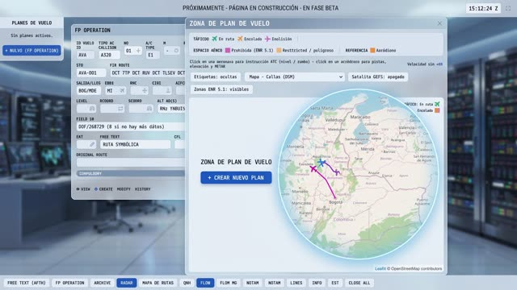
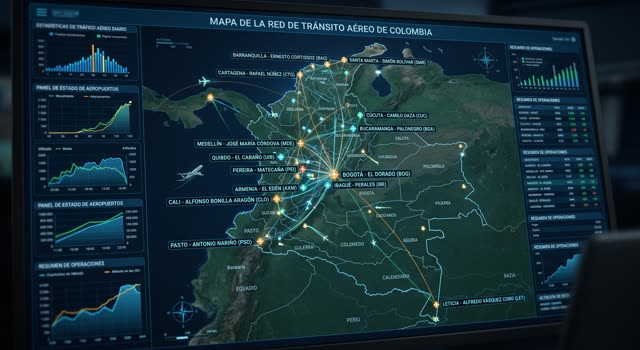
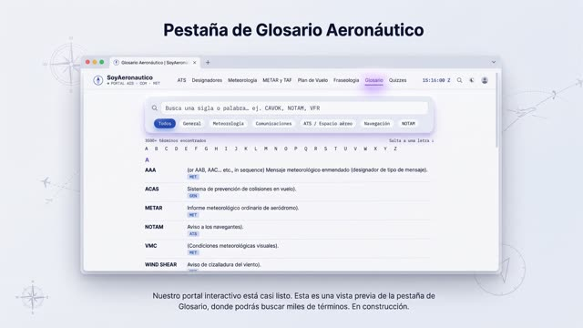
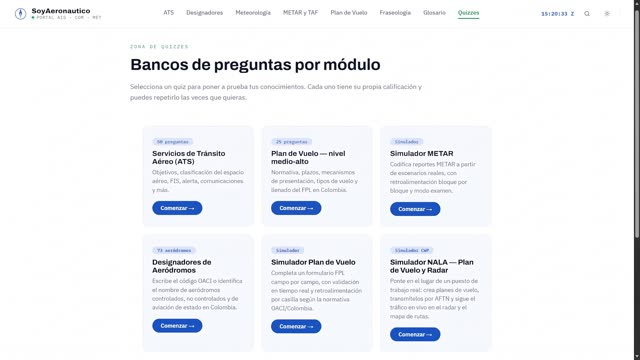

Bienvenido a bordo, compañero.
Gracias por elegir este camino. Como operador AIS·COM·MET vas a ser una pieza clave en la aviación: el puente entre pilotos, controladores y meteorólogos. Cada reporte que redactes, cada frecuencia que operes y cada dato que verifiques ayuda a mantener el cielo seguro para todos.
Seis módulos, un solo parcial.
Cada módulo trae guías, glosario cruzado y su propio banco de preguntas.
Meteorología Aeronáutica
Clasificación de nubes, fenómenos significativos y lectura completa de reportes METAR/TAF — la misma lógica del panel de consulta en vivo de arriba.
Estudiar el módulo →Servicios de Tránsito Aéreo
ATC, FIS, ACC/APP/TWR/AFIS y los objetivos de cada servicio.
Estudiar el módulo →
FPLPlan de Vuelo
Información detallada para el diligenciamiento correcto de cada casilla del FPL.
Estudiar el módulo →Fraseología Aeronáutica
Fraseología OACI estándar, fases de vuelo, emergencias y coordinación ATC — con quizzes de voz para practicar el readback hablando.
Practicar en voz →Navegación Aérea
Hora y husos horarios, velocidades, altímetro con sus reglajes QNH/QFE/QNE, VOR, DME y viento, en 6 bloques progresivos.
Estudiar el módulo →NOTAM
Para qué sirve, el código Q letra por letra, el formato casilla por casilla y sus primos SNOWTAM, ASHTAM y Trigger NOTAM.
Estudiar el módulo →Herramientas de consulta y práctica
Para buscar un dato rápido o ponerte a prueba.

Designadores de Lugar Más de 1.000 indicadores ICAO de aeródromos colombianos, filtrables por departamento.
Glosario Aeronáutico NOTAM, RVSM, PBN y demás términos técnicos, buscables al instante. Aeronaves Designador OACI, categoría de estela, performance y reconocimiento visual de cada tipo.
Zona de Quizzes Bancos de preguntas por módulo con calificación inmediata para tu autoevaluación.¿Eres profesor del curso?
Crea un grupo, comparte su código y asigna exámenes, lecturas, planes de vuelo o mensajería AFTN con fecha límite. Ves los resultados de cada estudiante con la nota de su mejor intento y los descargas en Excel.
Las cuentas de profesor las activa el autor del sitio.
Noticias del sector
Titulares recientes de Aviacionline, medio especializado en aviación comercial. El listado se actualiza cada 24 horas.